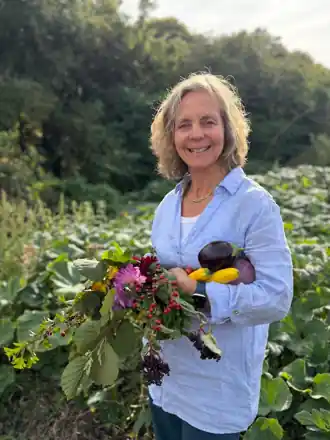
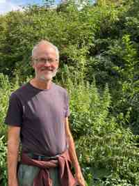

01
Good food
Fresh, seasonal vegetables, fruit, herbs and flowers grown locally using organic, no-dig and regenerative methods.
Growing good food. Growing biodiversity. Growing community.
A beautiful, biodiverse community-interest market garden on the edge of Marlow.
Discover the projectOur project
Gone Wild Veg is creating a productive, wildlife-rich growing space where fresh local food, ecological restoration and community benefit work side by side.

01
Fresh, seasonal vegetables, fruit, herbs and flowers grown locally using organic, no-dig and regenerative methods.
02
Chalk wildflower grassland, orchard trees and rough meadow will provide habitat for wildlife alongside our productive growing areas.
03
A community-interest enterprise designed to reconnect people with local food, practical growing and the landscape around Marlow.
From seed to harvest
Our four-acre site on Mundaydean Lane will combine productive growing with orchard, meadow and wildflower areas. The aim is not simply to grow crops, but to create a place that gets richer and more useful over time — for customers, the local community and wildlife.
Read more about Gone Wild Veg →
The team

Dee is a former medical doctor with a background in nutritional and environmental medicine. Her interests span food, soil, health and the gut microbiome, and she brings practical growing experience including creating a vegetable and flower garden for the Compleat Angler Hotel in Marlow.

Andrew has a long career in marketing services and business leadership, supported by a law degree and MBA. His experience includes strategy, planning, performance and financial management across major consumer research businesses.

Nick studied environmental sciences and worked in practical conservation and environmental advocacy before becoming a journalist then editor specialising in UK and international environmental and energy policy. He has also worked as a sustainability consultant.
Keep in touch
Whether you're a potential customer, funder, partner or neighbour, we'd be pleased to hear from you.
Contact us